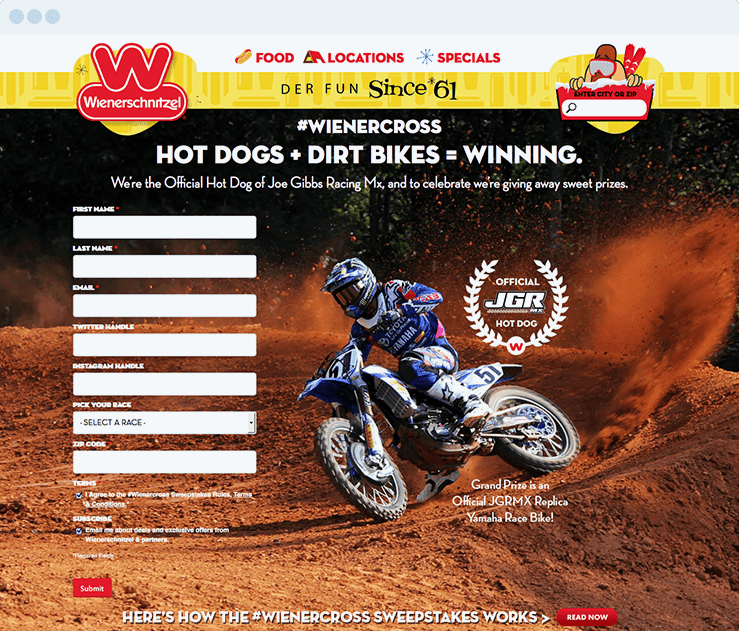

What we did: Utilizing a software called Stackla which aggregates hashtags to a feed that can then be embedded to a landing page, we asked users to go to Wienerschnitzel, snap a picture of themselves using the hashtag #wienercross, then sign up to win prizes.

Rocket Science? Not by a long shot. But I’ve been involved in contests like this that fell completely on the floor because they used a poor hashtag… people just really liked labeling their photos with #wienercross?